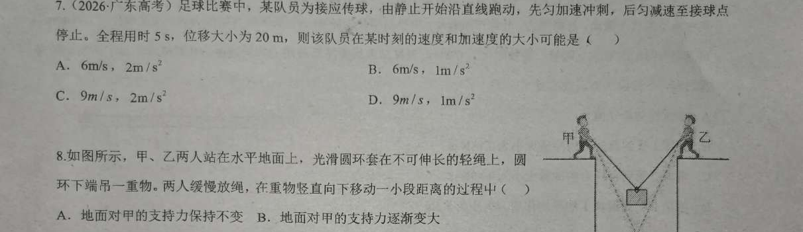

2026 广东高考 · 单选 · 答案：A | a₁ 滑块 + v–t 三角形
← 返回互动课件
面积法：位移 = 三角形面积 = ½·vm·t ⇒ vm = 2s/t = 2×20/5 = 8 m/s；全程平均速度 v̄ = vm/2 = s/t = 4 m/s。任取时刻速度 ≤ 8 m/s，且 8/a₁ + 8/a₂ = t = 5。
| 选项 | v, a | 速度 ≤ vm? | a 匹配某段? | 判定 |
|---|
条件：① 某时刻速度 ≤ vm=8；② 该加速度大小恰为加速段 a₁ 或减速段 a₂（即存在时刻落在相应 [斜率] 分段上）。把 a₁ 调到 2 时，A 项被点亮成立（仅此一个可行）。
总评：“先加速后减速到静止”的 v–t 图为三角形，位移=S=½·vm·t，命中多过程拆分(phy0297 · 出处：物一轮047.求解多过程运动_笔记)、中时速推论(phy0272 · 出处：物一轮044.学习两个重要推论_笔记)、刹车逆向(phy0269 · 出处：物一轮043.选择合适的公式_笔记) 与 v–t 面积(phy0243 · 出处：物一轮038.读v-t图像并还原运动过程_笔记)，契合度高（4 张）。缺口在“两段匀变速衔接处速度最大、由面积定 vm 的上限约束”，已补卡一张。
| 卡 | 知识点 | 契合 |
|---|